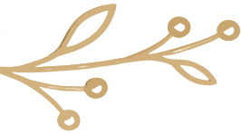

Возвращение человека к своему живому состоянию
Пространство для тех, кто больше не хочет жить в режиме внутреннего истощения.


Большинство людей живут в состоянии хронического истощения и считают это своей личностью И самое опасное — это начинает казаться обычной жизнью.
Человек привыкает:


Тело умеет жить иначе.

С ясной головой
С устойчивой психикой
С глубокой энергией
С ощущением внутренней тишины
С живым контактом с собой
Есть состояние, в котором человеку не нужно заставлять себя жить. Он просто чувствует жизнь.


Человек XXI века живёт в постоянной стимуляции
Современная среда буквально разрывает внимание человека на части. И постепенно вместе с этим уходят:



Большинство людей никогда не видели, на что способен их организм вне режима выживания
Меня зовут Наташа Сведовая.
Последние годы я исследую, что именно современная среда делает с человеком. Не только с телом, но и с нервной системой, уровнем энергии, психикой, состоянием лица и кожи, сексуальностью и способностью чувствовать жизнь глубоко.
Большинство людей пытаются «починить себя», не замечая, что сама среда вокруг ежедневно истощает организм.

Аудит
личной силы
Отметьте, что уже стало частью вашей повседневности:

0 из 7
Если вы узнали себя — это не означает, что с вами что-то “не так”. Это означает, что организм слишком долго жил в перегрузке.
Что такое
«ВЕДАНИЕ»?
«ВЕДАНИЕ» — это не просто wellness-клуб. Это пространство постепенного возвращения человека к своему живому состоянию.
Система, в которой мы соединяем:

Внутри пространства «ВЕДАНИЕ»
Восстановление организма и снижение воспаления
Антипаразитарные протоколы, детокс, восстановление ЖКТ, поддержка микробиома и работа с системным воспалением.

Энергия, питание и биологический ресурс
Функциональное питание, восстановление энергии, работа с дефицитами, естественное омоложение и возвращение тонуса.
Женская сила и жизненная энергия
Практики раскрытия чувствительности, восстановление либидо, магнетизма и ощущения внутренней живости.
Нервная система и внутренняя тишина
Йога, дыхательные практики, работа со стрессом, восстановление устойчивости и снижение внутреннего шума.
Пространство людей, которые выбирают жить иначе
Закрытое сообщество, живые эфиры, мастермайнды, поддержка кураторов и движение к более сильному состоянию жизни.
Доступ
в пространство
Пространство для тех, кто больше не хочет жить в режиме внутреннего истощения
Большинство людей сегодня пытаются восстановить себя хаотично. Случайные практики. Случайные советы. Случайные протоколы. Но настоящее восстановление должно быть системным.